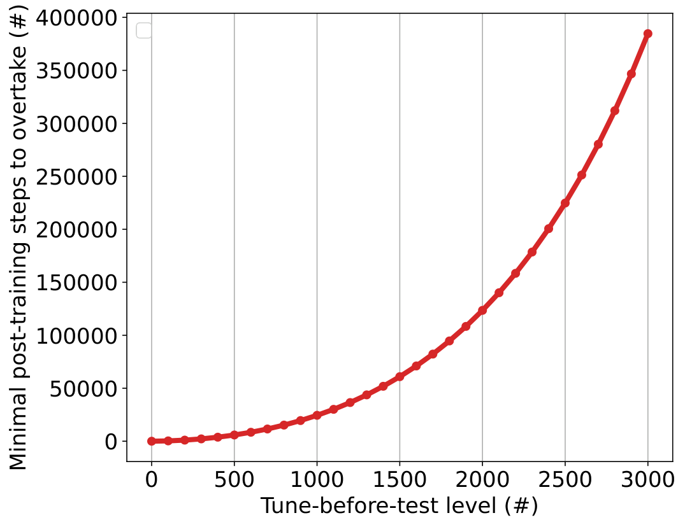

Overview
This paper addresses the problem of misaligned incentives in modern machine learning (especially large language model) benchmarks, where competing model developers engage in "benchmaxxing": strategic post-training to inflate leaderboard scores without improving general latent model capability. This practice leads to unstable, opaque, and misleading rankings that do not reflect true model quality. The key insight is to formalize leaderboard competition as a Stackelberg game between a benchmark designer (who chooses the evaluation protocol) and strategic model developers (who choose post-training effort to maximize rank-based rewards minus effort costs). The paper proves two core results: first, standard benchmarks without intervention have no pure-strategy Nash equilibrium, explaining the observed persistent arms-race behavior. Second, the recently proposed tune-before-test (TbT) protocol, which applies uniform benchmark-specific fine-tuning to all submitted models before evaluation, induces a unique stable Nash equilibrium that ranks models exactly by their latent capability, with no developer investing in additional strategic post-training at equilibrium.
Key Contributions
- Formal game-theoretic framework for leaderboard competition modeling the interaction between a benchmark designer and strategic model developers as a Stackelberg game, incorporating latent model capability, strategic post-training effort, and rank-based rewards.
- Negative theoretical result: Standard benchmarks (without TbT) have no pure-strategy Nash equilibrium, explaining persistent competitive benchmaxxing and inconsistent, uninformative leaderboard rankings.
- Positive theoretical result: Under mild regularity assumptions on score scaling and effort costs, the TbT protocol induces a unique pure-strategy Nash equilibrium where all developers choose zero additional benchmark-specific effort, and final rankings exactly reflect latent model capability.
- Empirical validation that TbT monotonically increases the cost of overtaking adjacent ranks, with small TbT levels (3000 fine-tuning steps in the case study) increasing the required overtaking effort by over 4 orders of magnitude.
- Derivation of the minimal stabilizing TbT threshold, the lowest-cost intervention for the benchmark designer that achieves stable, capability-aligned rankings.
Method
The proposed framework models leaderboard evaluation as a two-stage Stackelberg game:
The leader (the leaderboard designer) first commits to an evaluation protocol, after which the followers (model developers) simultaneously choose benchmark-specific effort. We study outcomes in which the developers play a Nash equilibrium of the induced follower game, and the leader chooses its action, anticipating this equilibrium response.
Core Definitions and Assumptions
Each model has a latent capability $\theta_i$ (ordered $\theta_1 > \theta_2 > \dots > \theta_n$), and the post-effort score mapping captures performance as a function of capability and total benchmark-specific effort (developer-chosen effort plus designer-applied TbT effort):
The post-effort score of a model with capability $\theta$ and total benchmark-specific training effort $e$ is
$$v(\theta,e): \mathbb{R}_{\geq 0}\times \mathbb{R}_{\geq 0}\to [0,1]$$ Two core structural assumptions are made, validated empirically across 9 benchmarks: 1. Cost Function Assumption: > The cost of benchmark-specific post-training $c:\mathbb{R}_{\geq 0}\to\mathbb{R}_{\geq 0}$ is non-decreasing and convex, with $c(0)=0$ and $\lim_{e\to\infty}c(e)=\infty$. 2. Post-Effort Score Assumption: The score function is continuous, with: - C1: Monotonicity in capability: $\partial_\theta v(\theta,e) > 0$ (higher capability models perform better at fixed effort) - C2: Diminishing returns in effort: $\partial_e v(\theta,e) \ge 0$, $\partial_{ee} v(\theta,e) \le 0$, scores converge to a capability-dependent upper limit - C3: Non-decreasing effort gaps: The extra effort a lower-capability model needs to match a higher-capability model's score does not shrink as target score increases. The empirical validity of these assumptions is demonstrated via post-training trajectories of Qwen2.5 models of varying sizes (proxy for latent capability) on the Winogrande benchmark:

A generalized power-law scaling model is used to fit empirical trajectories, satisfying all score assumptions: $$\sigma^{-1}\!\bigl(\tilde v(\theta,e)\bigr) = \alpha(\theta) + \beta(\theta)\log(1+e)$$ where $\tilde v(\theta,e) = \frac{v(\theta,e)-L(\theta)}{U(\theta)-L(\theta)}$ is the normalized score between model-specific lower ($L(\theta)$) and upper ($U(\theta)$) performance bounds, $\sigma$ is the logit link function, $\alpha(\theta)$ is baseline logit-scale performance, and $\beta(\theta)$ is the effort scaling coefficient. ### Utility Functions and Equilibrium Model developer utility equals rank-based reward minus effort cost: $$U_i(e_i; \textbf{e}_{-i}, \etbt) = R_{\operatorname{rank}(v_i)} - c(e_i)$$ where $v_i = v(\theta_i,\etbt+e_i)$, $\etbt$ is the uniform TbT effort applied by the designer, $R_j$ is the non-increasing reward for rank $j$, and $\operatorname{rank}(v_i) = 1 + \sum_{j\neq i}\mathbb{I}\{v_j > v_i\}$. The benchmark designer's utility rewards correct capability-aligned ranking minus the cost of TbT: $$U^L(\etbt; \textbf{e}) = R^L \cdot \mathbbm{I}[\rank(v_i) = \rank(\theta_i), \forall i] - n\cdot c^L(\etbt)$$ where $R^L \gg 0$ is the reward for a correct ranking, and $c^L(\etbt)$ is the per-model cost of TbT. A key preliminary result proves that any pure-strategy Nash equilibrium (PNE) of the induced developer game preserves the latent capability ordering: if $\theta_i > \theta_j$, then $v(\theta_i, \etbt + e_i^) \ge v(\theta_j, \etbt + e_j^)$. The proof uses counterfactual effort terms as illustrated below:
A further theorem shows that any PNE must be the all-zero additional effort profile, where no developer invests in strategic post-training. If the cost to overtake the adjacent upper rank is less than the reward gap between the ranks for any developer, no PNE exists, leading to persistent arms-race dynamics. ### Tune-Before-Test Mechanism TbT works by pushing all models into the diminishing returns regime of the score function, monotonically increasing the cost of overtaking adjacent ranks. The just-overtake effort $e_r^\req(\etbt)$ is defined as the minimal additional effort model $r$ needs to overtake model $r-1$ at TbT level $\etbt$: $$e_r^\req(\etbt) = \inf\{e\geq 0: v(\theta_r, \etbt + e) > v(\theta_{r-1}, \etbt)\}$$ The paper proves that $e_r^\req(\etbt)$ is strictly non-decreasing in $\etbt$, so higher TbT levels make overtaking more costly:

The minimal stabilizing TbT threshold is defined as the smallest $\etbt$ that makes overtaking unprofitable for all developers: $$\etbt^\star = \inf\left\{\etbt\geq 0: c\left(e_r^\req(\etbt)\right) \geq R_{r-1} - R_r, \forall r=2,\dots,n\right\}$$
Any $\etbt \ge \etbt^\star$ induces a unique PNE with zero additional developer effort and correct capability-aligned rankings.
Experiments
The paper validates its theoretical results via controlled post-training experiments on 9 benchmarks using the Qwen2.5 model family, with model size as a proxy for latent capability.
Key Empirical Results
The minimal overtaking effort grows rapidly with TbT level, as shown in Table 1 for the Winogrande benchmark:
Table 1: Minimal Overtaking Effort by TbT Level on Winogrande
| TbT Level ($\etbt$, steps) | Minimal additional effort to overtake adjacent rank (steps) |
|---|---|
| 0 | 18 |
| 500 | 5,890 |
| 1,000 | 34,200 |
| 3,000 | 384,668 |
At $\etbt=3000$, overtaking requires over 20,000x more effort than at $\etbt=0$, making strategic post-training completely unprofitable for realistic reward gaps.
Scaling Law Case Study
For the hardest-to-stabilize adjacent model pair in the case study, the estimated stabilizing TbT threshold for a reward gap equivalent to 1000 units of effort is only ~4 fine-tuning steps, demonstrating that small TbT interventions are sufficient to stabilize rankings even for large reward gaps. The required TbT level grows polynomially with the reward gap, with exponent $\gamma_r = \beta(\theta_r)/\beta(\theta_{r-1}) \le 1$, meaning the required TbT grows far slower than the reward gap.
Limitations & Future Work
The framework makes several simplifying assumptions that can be extended in future work: it assumes deterministic scores, known latent capabilities to all developers, and homogeneous effort cost functions. Future work will incorporate noisy evaluation, uncertainty about competitor capabilities, and heterogeneous cost structures to better match real-world benchmark environments. Additionally, TbT has practical trade-offs: it requires additional evaluation compute and may conflate inherent model capability with adaptation ability, so future work will explore alternative low-cost incentive-aligned evaluation protocols. The framework can also be extended to study dynamic leaderboard competition with repeated submissions over time.